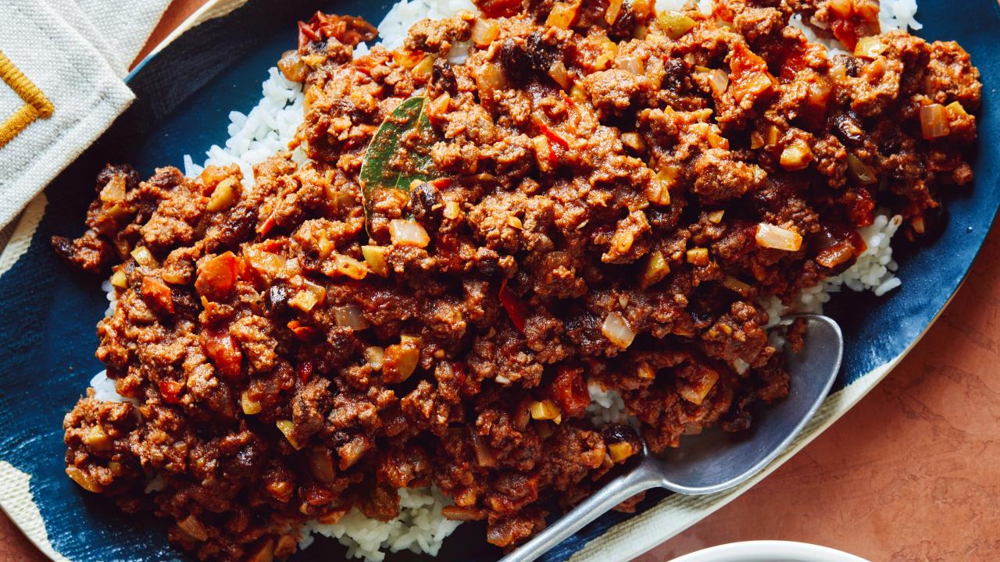

Cuban Picadillo

Description
This is a popular, homey Cuban dish of ground beef in a savory tomato sauce.
It's sometimes referred to as Cuban chili, although the flavors are quite a
departure from American-style chili. It's also not spicy, making it a great
dish for more sensitive palates.
Ingredients
- 2 tablespoons olive oil
- 1 large yellow onion, finely chopped (about 2 cups)
- 4 cloves garlic, minced
- 2 bay leaves
- 1 pound ground beef or combination of beef chorizo, and pork
- 1/3 cup dry white wine or dry sherry
- 10 cherry tomatoes, chopped or 1 (8-ounce) can diced tomatoes with juice
- 1/3 cup tomato paste
- 1/3 cup chopped pimento stuffed Spanish olives with 1 tablespoon brine from jar
- 1/3 cup raisins
- 2 teaspoons dried oregano
- 2 teaspoons ground cumin
- 1/4 teaspoon cayenne pepper, optional
- Salt and freshly ground black pepper
Directions
- Heat oil in a large skillet over medium-high heat. Add onion, garlic, and bay
leaves and saute until onion is soft, stirring frequently, about 4 minutes.
- Add ground beef to skillet and cook until browned. Once the meat is browned,
carefully away from the flame, tilt pan and remove excess fat with a large spoon.
- Add the white wine and stir for another minute. Then add the chopped cherry
tomatoes, tomato paste, pimento stuffed Spanish olives, raisins, dried oregano,
cumin and cayenne pepper. Simmer over low heat for another 8 minutes, stirring
occasionally. Season with salt and pepper.
- Serve warm:
- As a filling for empanadas or tacos
- Over white rice with fried plantains or black beans
- With a side salad and black beans
- To make Picadillo soupier for serving over rice, add additional wine, chicken
or beef stock.